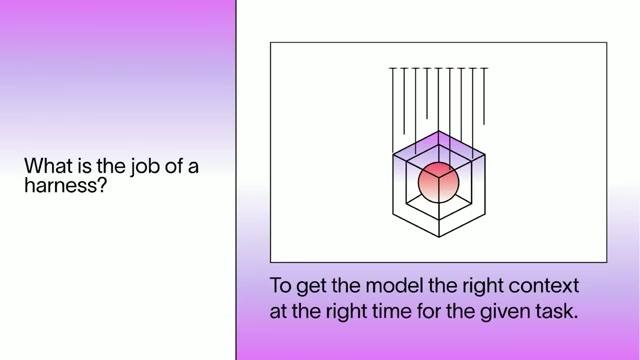
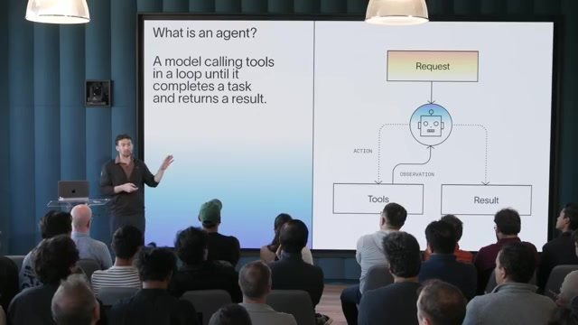
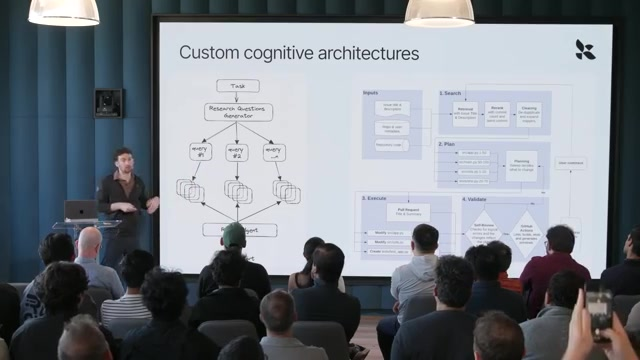
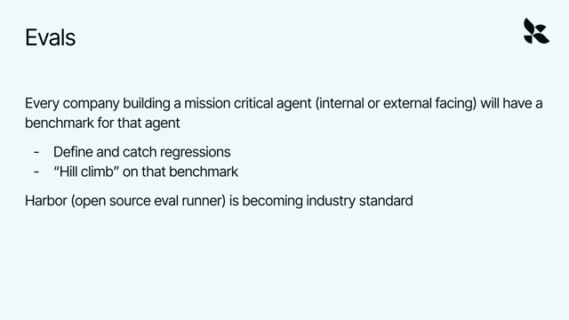
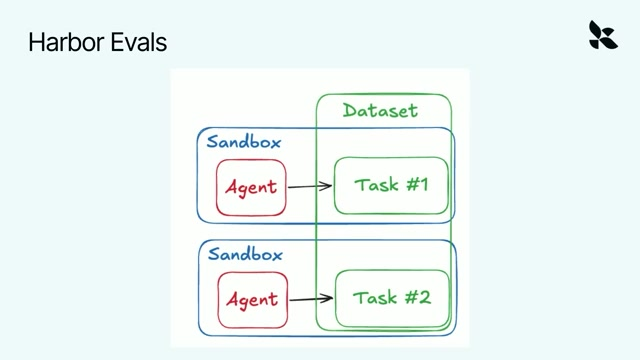
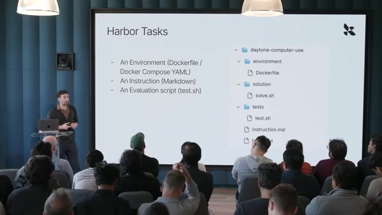
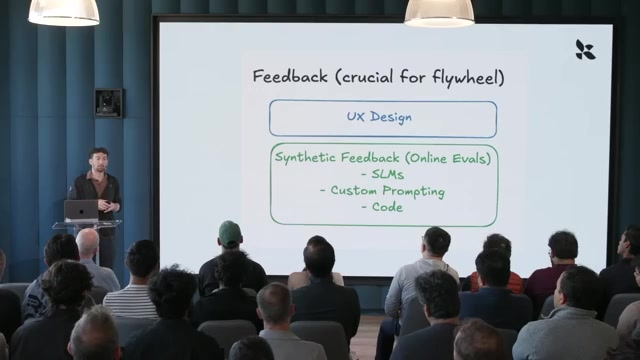
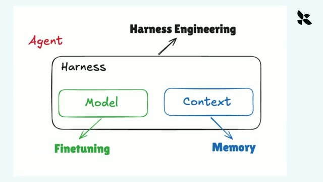
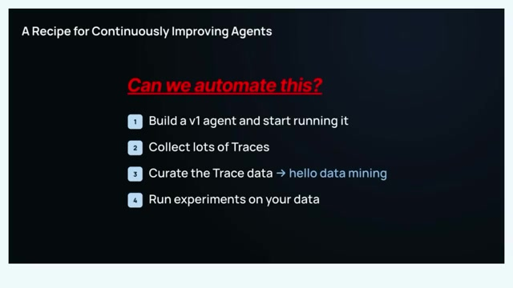
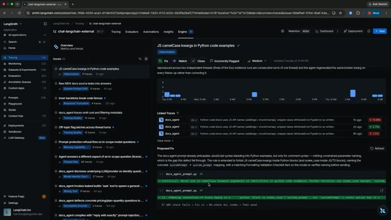

1. 开场与 Harness 的核心循环
00:00:00主持人Harness。我认为这是一个非常重要的话题。你们当中很多人现在都在考虑构建自己的 Harness，所以我很高兴向大家介绍 Harrison。
00:00:10主持人我最早是在 2022 年、还处于 GPT-3 时代的时候，在 Twitter 上注意到 Harrison 的。他是最早思考这件事的一批人之一：既然我们有了这些模型，怎样围绕模型构建一整套运行机制，让它们不只是做自动补全，而是开始成为虚拟协作者，或者说 Agent？
00:00:29主持人Harrison，从 2022 年到现在，整个生态已经发展了很多。我也看到，你在构建 Agent、构建 Harness，以及如何评估它们等方面的思考不断发展。所以很高兴今天请你来分享。这场演讲会同时涉及 Harness 和评估。形式仍然是大约 15 分钟的演讲，再加大约 15 分钟的问答。谢谢你来参加，Harrison。
00:00:57Harrison Chase大家好，我是 Harrison，LangChain 的联合创始人兼 CEO。我想围绕“拥有自己的智能”这个主题，谈谈评估和 Harness。
00:01:08Harrison Chase当我们讨论智能时，通常讨论的是 Agent。那么，一个 Agent 究竟由什么组成？在 LangChain，我们认为主要有三个部分：一个负责组织运行的 Harness、一个模型，以及一些上下文。如果你想拥有自己的智能，大概会希望这三个部分都掌握在自己手中。
00:01:25Harrison Chase关于拥有模型，我不会展开太多。前面来自 Fireworks 的 Lin〔姓名拼写未确认〕已经谈过开放权重模型，以及如何拥有模型。这里很重要的一点，是能够切换模型。过去有一种“云无关”的理念，也就是能够在不同云之间切换；模型也是一样。你希望能切换模型，既避免被锁定，也能在更好的模型出现时使用它。
00:01:47Harrison Chase在上下文方面，你希望掌握 Agent 使用的全部上下文，无论是记忆、语义知识，还是之前的对话。这些信息都可以在 Agent 执行过程中帮助它实现个性化，并引导它的行为。最后一个部分是 Harness，这也是我今天真正想重点讨论的。
00:02:02Harrison Chase那么，怎样才能真正拥有自己的 Harness？这究竟意味着什么？Harness 最主要的职责是什么？它最主要的职责，是在正确的时间，把上下文送到模型面前。

00:02:13Harrison Chase因此，它要组织固定上下文和动态上下文，把它们放进模型的上下文窗口，呈现给模型，得到响应，再对响应做进一步处理。为了完成任务，Agent 需要做很多不同的事情，其中也有大量特定领域的工作。它们还需要与外部系统交互，而外部系统会产生更多上下文，这些信息又可以反馈到 Agent 的循环中。Harness 就是把这一切组织在一起的机制。
00:02:43Harrison Chase从最简单的角度看，大家谈论 Agent 时，实际上说的就是一个循环运行、调用工具的大语言模型。这是一个非常简单，却又非常通用的架构：一个请求进来，模型生成内容；生成结果中可能包含要调用的工具。如果包含，就执行工具，再把观察结果传回模型。今天几乎所有 Agent 背后，都是这样一个核心架构。

00:03:12Harrison Chase不过，它们又会在一些地方有所不同。左边展示的是基础的核心循环，而你可以在自己 Harness 的不同阶段做许多事情。我们开发的 LangChain，就是一个非常基础、精简的 Harness。这里另一边是 Deep Agents，可以把它理解为我们提供的、模型无关且用途更通用的 Claude Code。
00:03:39Harrison ChaseDeep Agents 做的事情更多：它连接文件系统，有 Skills，也有子 Agent。它建立在这个非常简单的 Harness 之上，但我们通过这里的这些调节点对它进行定制。比如，你可以在 Agent 被调用前，或者每一次模型调用前，运行特定代码；也可以包装模型调用、包装工具调用。只需要一些小的、我们称为 middleware 的构件，就能以很强大的方式定制这个简单的核心循环。
00:04:09Harrison Chase定制 Harness 当然还有其他方式。但这种模式已经逐渐形成了：很多编码 Agent 里也有 hooks 和 plugins 的概念，本质上都是在运行中的基础循环里，在不同位置增加钩子或插件，让你可以定制它。
00:04:27Harrison Chase所以，很多定制工作都可以通过 middleware 来完成，也就是修改这个核心循环。Agent 仍然在循环运行，仍然遵循同一种简单架构；但借助这些扩展，你可以让它访问沙箱、文件系统、子 Agent、记忆，也可以增加摘要机制。
00:04:49Harrison Chase回到刚才的图，摘要会发生在模型调用之前：在调用模型前，你先检查上下文是否过长，过长就进行摘要。通过 middleware，就能把这一步加入核心循环。上下文卸载也是一样，基本上就是把很大的工具调用内容转存出去；这种机制会包装工具调用。
00:05:08Harrison Chase我想强调的是，Agent 有一个非常简单、通用的架构。所有更高级的 Agent Harness，本质上都在运行这个循环，同时在周围加入许多东西。因此，当你考虑构建或定制自己的 Harness 时，这些就是可以插入逻辑的位置。你可以加入自己的摘要步骤，也可以加入对特定工具调用的处理。这是一种让 Agent 和 Harness 适应特定领域的方法。

2. 定制架构与模型适配
00:05:40Harrison Chase另一种定制 Agent 运行机制的方法，是采用更显式的认知架构。2023 年、2024 年，很多人就是这样构建 Agent 的，因为当时模型还不够强，不能很好地直接在循环里运行。为了让它完成特定事情，你需要设计非常专门的认知架构。
00:06:03Harrison Chase这里的例子是深度研究：先生成一些子问题，把它们分发出去，然后执行。另一边的例子是代码审查机器人。你可以看到，这些流程里有非常专门的步骤。

00:06:18Harrison Chase现在，其中很多内容已经进入 Harness 了。这里说的 Harness，仍然是那个核心循环，只不过这些内容可能被作为特定修改加入循环。不过，对一些非常具体的流程，我们仍然看到人们使用这样的认知架构，来以特定方式引导 Agent。
00:06:36Harrison Chase我们通常建议先从通用 Harness 开始。这最容易上手，也能最快产生价值。随着你逐渐明确自己希望做到出色的用例，就可以开始在周围增加更多关卡和检查，把它引向特定的执行方式。
00:06:55Harrison Chase我们经常被问到：什么时候应该考虑自己构建 Harness，什么时候应该使用现成的？许多现成 Harness 是配合特定模型工作的，比如 Claude Code、Claude Agent SDK 配合 Anthropic 模型，Codex 配合 OpenAI 模型。
00:07:16Harrison Chase我认为，这仍然是行业里的一个开放问题。我的一般回答是：你的任务越接近模型训练过的分布，现成 Harness 就越有优势；当你越来越偏离那个分布时，大概就需要以某种方式调整自己的 Harness。
00:07:34Harrison Chase调整 Harness 也有不同方法。在一个整体上偏离训练分布的任务中，模型对某些具体工作仍然可能是分布内的。比如 Gabe 刚才谈到的法律 AI，我记得他提到他们有自己的 Harness。但法律 AI 里的一些事情，仍然属于主流模型训练过的分布。
00:07:57Harrison Chase例如文件编辑，主流模型都为此做过强化学习，而且训练采用的方式非常具体。OpenAI 和 Claude 模型在各自 Harness 里编辑文件的方式不同，因此，它们最擅长的文件编辑方式实际上也不同。
00:08:15Harrison Chase所以，模型可能不熟悉法律 AI 这个更大的任务，但熟悉文件编辑这个子任务。如果你要为这样的场景构建 Harness，大概会希望整体采用定制 Harness，同时使用与你所选模型训练分布一致的文件编辑工具。
00:08:35Harrison Chase举例来说，Deep Agents 是我们提供的可定制 Harness。我们在里面引入了 model profiles，也就是模型配置档案。对于文件编辑这类模型已经熟悉的能力，我们会根据所使用的模型，在不同的文件编辑实现之间切换。
00:08:54Harrison Chase这个例子说明：当整体任务偏离训练分布时，可以定制整体 Harness；但对于那些仍然处于训练分布内的小部分，应该尽量让它们贴近模型层。
3. 评估与可观测性
00:09:06Harrison Chase我想谈的第二个重点，是评估和可观测性。当你在 Agent 的各个部分上做实验时，无论是模型、Harness 还是上下文，你都会想知道系统内部正在发生什么，也会希望能够评估它。这些工具不仅适用于定制 Harness，也适用于定制模型。
00:09:28Harrison Chase两周前，一位作者〔姓名未确认〕在 Twitter 上写过一篇很棒的文章，谈到了许多相关概念。其中有三段话让我印象特别深。
00:09:39Harrison Chase第一，建立你自己的私有评估，因为评估定义了组织内部什么才算“好”。第二，保留组织对记忆、执行轨迹、反馈、决策和机构上下文的所有权。这里的加粗是我自己加的。第三，建立你自己的持续学习闭环，也就是一个不断爬坡优化的系统，让 AI 投入为公司的价值带来复利。
00:09:59Harrison Chase我认为，这些话说明了评估、可观测性，以及它们所驱动的学习闭环有多么重要。它们能让你真正拥有自己的智能，并让这种智能持续积累。那么，它们具体是怎样做到的？
00:10:12Harrison Chase先说评估。Gabe 刚才讲了他们如何为法律领域构建基准。我认为，每一家公司在构建关键业务 Agent 时，都会为这个 Agent 建立基准。你可以用它定义并发现回归，也可以围绕这个基准不断优化，无论是调整 Harness，还是调整模型。

00:10:31Harrison Chase我们看到，Harbor 正逐渐成为定义这些基准的一种行业标准。Harbor 是一个开源评估运行器，由 Terminal-Bench 2 的开发者创建；Terminal-Bench 2 是评估编码 Agent 的行业标准基准之一。Harbor 也开始在不同领域流行起来。
00:10:47Harrison Chase它可以让你做这样的事情。这是 Frontier-Bench，另一个编码基准。你可以用这样的基准比较不同 Agent Harness、不同模型和不同推理投入，看看这些 Harness 和模型在你的任务上分别表现如何。因此，当你试图定义自己的任务表现时，拥有一个属于自己任务的基准，会变得非常重要。
00:11:10Harrison ChaseHarbor 究竟是什么？从高层看，它非常简单：你让一个 Agent 在一个数据集上运行，数据集里包含许多不同任务。通常，这些任务会在沙箱中运行，因为任务数量很多，你可能希望并行执行。另外，正如我接下来要讲的，每个任务还有自己的环境。

00:11:30Harrison Chase一个 Harbor 任务是这样的。右边可以看到，它有一个 environment，用来定义 Agent 运行的环境。很多运行时间较长、带有状态的 Agent，都需要与环境交互。所以，你基本上就是启动一个沙箱，通过 Dockerfile 定义它自己的环境，再让它在里面运行。

00:11:48Harrison Chase接着是 solution，也就是一个参考解，用来做基本合理性检查。这个部分不是最值得展开的。更有意思的是 tests，它基本上就是 Agent 运行的验证器。
00:12:01Harrison Chase测试脚本可以做任何事情：执行代码、运行单元测试、调用另一个大语言模型担任评判者，甚至调用一个 Agent 担任评判者。你基本上是在测试里定义如何为 Agent 评分。然后，instruction.md 就是给 Agent 的提示词。
00:12:15Harrison Chase这就是 Harbor 的核心。你定义一组任务，每个任务都是可以在沙箱中运行的一整套内容，然后让各种 Agent 在这些任务上运行。再强调一下，Agent 由模型和 Harness 组成；最后，你给它们的表现打分。
00:12:28Harrison Chase做完这些，你能得到什么？你会得到一组可以比较的结果。这里展示的是 LangSmith，也就是我们构建的评估和可观测性平台。你可以看到一系列不同实验，我们和 Harbor 有很好的集成。
00:12:41Harrison Chase你可以查看反馈分数，这个例子里使用的是单一奖励函数。你还可以跟踪时延和 token 用量。评估 Agent 时，你大概不只关心准确率，也会关心时延和成本，所以这些指标都应该跟踪。对于某一次具体实验，这里展示的就是 Harbor 数据集里的各个任务。
00:13:04Harrison Chase接下来简单谈一下可观测性。它听起来很基础，但我认为，对于 Agent 而言，它非常重要，也被严重低估了。Agent 出错，是因为某一次大语言模型调用出了问题。为什么会出问题？可能有两种原因：第一，模型不够好；第二，模型收到的上下文不够好。我实际上认为，后者往往才是更常见的问题。
00:13:26Harrison Chase所以，你需要很好地观察：到底有什么进入了模型的上下文窗口？这些上下文是怎样积累起来的？运行过哪些步骤、哪些工具？这些信息为什么会到这里？Agent 出错时，这一切对调试都非常重要。

00:13:42Harrison Chase这里展示的是我们提供的一种可观测性视图，目的是让它更方便用户阅读。这有点像你在 Claude Code 里看到的样子。我们隐藏了部分工具调用，比如上面可以看到“七次工具调用”，这样你就可以比较容易地快速浏览整个过程。
00:14:01Harrison Chase现在，大多数 Agent 的执行路径都以 trajectory，也就是轨迹的形式出现。你可以把它想象成 Claude Code 运行时展示的消息列表：你输入一条用户消息，Agent 接着调用一系列工具，这些在底层都是消息；然后它回复，你再输入下一条用户消息。
00:14:20Harrison Chase这种消息轨迹正变得越来越核心。但仅靠它还不足以完成调试，所以我们还提供完整 trace。你可以点进具体的部分，查看模型调用内部究竟发生了什么。这种可观测性对于理解系统在做什么，非常重要。
4. 数据飞轮与 Engine 演示
00:14:38Harrison Chase评估和可观测性，让你真正能够建立一个数据飞轮。随着你开始使用 Agent，用户也开始使用它，你会不断得到反馈，智能也就能够持续积累。
00:14:50Harrison Chase这张幻灯片来自我们团队的一位成员，他曾在 swyx 的 AI Engineering Fair 上介绍过一套持续改进 Agent 的方法。从高层看很简单：先构建一个 Agent，让它运行起来；收集大量 traces；整理筛选轨迹数据；再在筛选后的数据上开展实验。
00:15:10Harrison Chase说起来很简单，底下当然有很多复杂性。其中一个非常重要的部分是反馈：从环境中获得反馈，或者从合成来源获得反馈。
00:15:21Harrison Chase对于环境反馈，我认为在 Agent 设计里，一个被严重低估的因素，其实是你怎样通过用户体验把 Agent 呈现给用户。如果呈现方式足够巧妙，你实际上可以从用户那里得到很多反馈。他们未必会明确点击赞或踩，实际上也没有多少人这么做；但聪明地设计用户体验，就能拿到其中一些反馈。

00:15:42Harrison Chase另一件可以做的事，是获得合成反馈。你可以在这些 traces 上运行我们所说的在线评估器，来进行判断。Gabe 提到过我们和 Harvey 一起做的一项实验：我们显著降低了一些“由大语言模型担任评判者”的成本。
00:15:59Harrison Chase如果你让 Opus 评判进入系统的每一条 trace，账单会很高，所以你需要一种非常便宜、快速的方式。我们为此微调过一些小语言模型，也就是 SLM。当然，你也可以用现成模型配合定制提示词；如果要测试的内容足够简单，直接用代码也可以。
00:16:20Harrison Chase这就构成了完整过程。整理轨迹数据时，反馈是其中的重要部分。另一个问题是，当你用这些数据更新系统时，究竟更新什么？在这样的体系中，Agent 的任何部分都可以更新。
00:16:36Harrison Chase你可以通过 Harness engineering 更新 Harness，通过微调更新模型，也可以通过记忆更新上下文。在 LangChain，我们思考最多的是 Harness engineering 这一部分。所以，我想用一个很短的演示，展示我们最近为此增加的一项能力。

00:16:55Harrison Chase接下来 Trajectory〔名称按转写保留，未确认〕会讲一些可以进行的微调。其实这是非常类似的流程：运行 Agent，得到一些 traces，然后以某种方式利用这些数据改进系统。这个系统就是前面说的三个部分，任何一个部分都可以通过某种方式更新。这就是你可能希望建立的完整端到端流程。
00:17:14Harrison Chase我们一直在思考的一件事，是怎样尽可能把这个过程自动化，因为它很复杂，也很耗时间。这也是我们过去几个月一直考虑的问题之一。
00:17:27Harrison Chase我想快速演示一下我们称为 LangSmith Engine 的东西。它基本上是一个建立在 traces 之上的 Agent，来完成刚才这些工作。具体来说，你已经有了 traces，后面的工作就是整理它们、运行一些实验，并针对那三个部分中的一个提出修复建议。正如我前面说的，我们主要关注 Harness engineering。

00:17:49Harrison Chase接下来的演示，我想让大家看看这套东西长什么样，怎样呈现。希望演示能正常运行；如果不行，也不是什么大问题。很好，可以了。
00:17:58Harrison Chase这是 LangSmith，这里有许多不断进入的 traces。我们这里有一个叫 Engine 的标签页。它是一个在后台运行的 Agent，会创建我们所说的 issue boards，也就是问题看板。这就是数据整理的部分。
00:18:12Harrison Chase在底层，它基本上是一个能够访问 LangSmith CLI 的编码 Agent。你可以通过 CLI 按反馈及其他条件筛选 traces。我们给它一个相当完整的提示词，以及一些子 Agent，帮助它探索数据、识别问题，找出反复出现的共同模式，然后在这里创建问题记录。
00:18:34Harrison Chase比如这里，它已经创建了一个问题，给出了描述，还链接到相关 traces，所以我可以点进去查看支持这个判断的证据。再往下，这里是一些很简单的提示词修改：它正在更新一部分上下文；这里还修改了一些指令。我们也可以看到，它加入了一些应该放进 Harness 的代码。

00:18:57Harrison Chase这是我们过去几个月上线的一项能力。我认为它体现了这个数据飞轮，而这个飞轮本身其实很简单：运行 Agent，得到 traces，观察模式，然后修复。这就是我们尝试把它自动化的方式。我的分享就到这里，欢迎大家提关于 Harness 或评估的问题。
5. 现场问答与结束
00:19:19现场提问者非常好，顺便说一句，我很喜欢整个分享。Engine 本身也是一个 Agent，对吧？你给它一个提示词，让它去搜索这些东西。那你们有没有让 Engine 分析 Engine 自己？
00:19:31Harrison Chase有，我们已经在运行了。Engine 也会接入 Slack，发送一些有关自身的报告，我们就是这样在内部使用自己的产品的。
00:19:40Harrison Chase我们还为 Engine 创建了一个叫 Issue Bench 的东西，它同样基本上是 Harbor 格式的基准。我们会不断在上面测试不同模型和不同 Harness。我想 Gabe 也谈到过这一点：有了基准的一个好处，就是你可以测试许多不同 Harness，看看各自擅长什么、不擅长什么。
00:20:07Harrison Chase我记得几周前，我们在这个基准上跑了自己的 Deep Agents，以及 Codex 和 Claude Code。我们发现 Codex 做了一件很有意思的事：它会为自己写许多小脚本，再用这些脚本分析 traces。它非常积极地这么做，而这种做法确实让它取得了很好的表现。
00:20:23Harrison Chase所以我们做了一次集中开发，称之为 Engine 的“Codex 化”，基本上就是把观察到的这种做法带回 Engine 的核心 Harness。我认为，这也是拥有基准的另一个好处：你可以在上面运行许多不同系统，看看它们实际表现如何，再把发现带回自己的核心 Agent Harness。
00:20:45现场提问者很棒的分享。你认为 Harness 会在多大程度上趋同为同一种东西，用户逐渐学会使用这种方式，模型也最适应这种方式？还是它们会继续分化，每家公司都有自己优化过的做法？
00:21:02Harrison Chase这是个非常好的问题，也是我们一直在思考的问题。我也和 Factory 的一位朋友聊过，他同样在深入思考这个问题。〔此处人名未听清。〕坦率地说，我的回答是：我不知道。
00:21:22Harrison Chase我看到的一些情况是，通用 Harness 已经足够好，能够完成很多基础任务，至少在你刚开始时是这样。所以，我会建议先从现成 Harness 开始，无论是 Deep Agents、Codex、Claude Code，还是类似的东西，因为我认为模型现在已经足够强了。
00:21:41Harrison Chase我们已经学到一些让这些模型表现更好的方法，比如让它们访问文件系统、使用子 Agent。这些能力现在也已经足够好。但我们经常看到，你的任务越偏离训练分布，就越希望定制 Harness。
00:21:57Harrison Chase这其实是一个连续谱。在最极端的一端，你可能希望构建一整套非常有针对性的认知架构。顺便说一下，还有一个理由会让你这样做，那就是可预测性和控制力。
00:22:12Harrison Chase我们有很多金融服务行业的客户，他们需要可预测性。我们向他们展示 Deep Agents 这样的东西时，他们会说：“等等，这种 Agent 对我们来说太让人不放心了。我们希望用更定制化的认知架构，真正控制它的行为。”
00:22:29Harrison Chase而在另一端，你可以直接使用现成 Harness；中间也有 hooks、middleware 这样的方式，帮助你调整它。所以这也是一个连续谱。越偏离训练分布，你就越可能希望使用定制 Harness。
00:22:42Harrison Chase另外还有一些比较奇特的现象。比如我认为 OpenAI 和 Anthropic 都越来越擅长编码，但它们最终选择了不同的文件编辑方式，而且这些方式实际上相当不同。我想，它们各自都有一些基准，也许有人觉得其中一种方式就是比另一种更好，严格意义上更优。
00:23:04Harrison Chase所以，我认为模型实验室会在某些方面趋同，因为它们看起来都在变得非常擅长编码。如果继续沿这条路走，Harness 也会趋向于非常擅长编码。但与此同时，它们又存在这些很小的差别，我也不太知道该怎样解释。
00:23:25Harrison Chase现在，这些差别最具体地体现在一些小事情上。但你可以想象，如果某一家实验室真正深入生物领域，它的 Harness 变得非常擅长生物 Agent 的工作，那么 Harness 本身就会开始分化。所以，我的答案是：我不知道。这个领域变化很快，这也是我认为评估和可观测性重要的原因——我们需要衡量所有这些变化。
00:23:49Harrison Chase很好，太棒了。
00:23:50Harrison Chase谢谢大家。